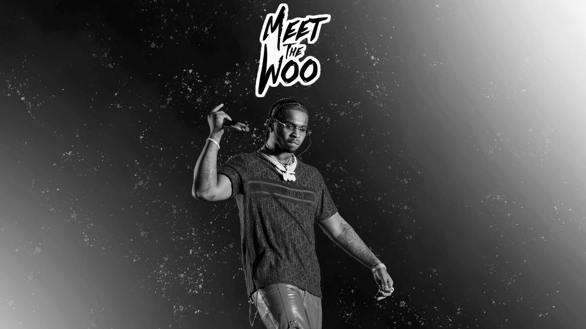

Pop Smoke, cuyo nombre real era Bashar Barakah Jackson, nació el 20 de julio de 1999 en Brooklyn, Nueva York. Se crió en el barrio de Canarsie y desde joven mostró interés por la música.
Comenzó a hacer rap a una edad temprana y rápidamente ganó popularidad en la escena del hip hop de Nueva York. Su estilo distintivo y su voz profunda lo destacaron entre otros artistas de la región.
En 2019, lanzó su sencillo de éxito "Welcome to the Party", que lo catapultó a la fama nacional e internacional. Este sencillo fue seguido por su mixtape debut "Meet the Woo", que recibió elogios de la crítica y fue un éxito comercial.
Pop Smoke continuó lanzando música exitosa, colaborando con otros artistas destacados del hip hop y consolidándose como una de las figuras más importantes de la nueva generación de rap.
En abril de 2019, Pop Smoke lanzó su sencillo de éxito "Welcome to the Party", que lo catapultó a la fama y lo convirtió en una figura destacada en la escena del hip hop.
En julio de 2019, Pop Smoke lanzó su mixtape debut "Meet the Woo", que incluyó canciones populares como "Flexin'" y "Dior", estableciendo su posición en el mundo del rap.
En febrero de 2020, Pop Smoke lanzó su segundo mixtape "Meet the Woo 2", que incluyó éxitos como "Dior" y "Shake the Room", consolidando su estatus como una estrella ascendente en la escena del hip hop.
En diciembre de 2019, Pop Smoke colaboró con Travis Scott en la canción "Gatti", que formó parte de la compilación de JackBoys. La pista recibió elogios por su energía y estilo distintivo.

Pop Smoke no solo fue influyente en la música, sino también en la moda. Su estilo único y su enfoque audaz hacia la moda urbana lo convirtieron en un icono de estilo.
Aunque su carrera fue truncada prematuramente, Pop Smoke dejó un impacto perdurable en la cultura pop. Su música sigue siendo escuchada y su estilo continúa inspirando a artistas y aficionados de todo el mundo.